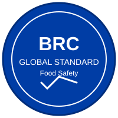

EN
EN
 FR
FR
 AR
AR
 HY
HY

Բրենդի հեղինակություն համապատասխանության միջոցով
BRC Համաշխարհային Ստանդարտը սննդի անվտանգության համար առաջատար համաշխարհային ստանդարտներից մեկն է, որն օգտագործվում է ավելի քան 25,000 սերտիֆիկացված մատակարարների կողմից 130 երկրներում։ Այն ապահովում է շրջանակ արտադրանքի անվտանգությունը, ամբողջականությունը, օրինականությունը և որակը կառավարելու համար, միաժամանակ պաշտպանություն տալով սպառողին։
Հիմնադրված 1998 թվականին Մեծ Բրիտանիայի խոշոր մանրածախ վաճառողների կողմից, BRC-ն դարձել է սննդի անվտանգության և որակի կառավարման համակարգերի համաշխարհային չափանիշ։ Ստանդարտը ճանաչված է Համաշխարհային Սննդի Անվտանգության Նախաձեռնության (GFSI) կողմից և կարևոր է խոշոր մանրածախ վաճառողներ և սննդի սպասարկման կազմակերպություններ մատակարարող ընկերությունների համար։
Շահիրյանում մենք մեծ հպարտություն ենք զգում մեր BRC սերտիֆիկացումով։ Այն ցույց է տալիս մեր անսասան պարտավորվածությունը՝
1958 թվականից Շահիրյանը արտադրում է պրեմիում ձավարի ցորեն՝ օգտագործելով ավանդական մեթոդներ, որոնք փոխանցվել են սերունդից սերունդ։ Մեր BRC սերտիֆիկացումը ներկայացնում է ժամանակաընթաց արհեստավարժության և ժամանակակից սննդի անվտանգության ստանդարտների կատարյալ միությունը։
Մենք անցնում ենք տարեկան աուդիտներ մեր սերտիֆիկացումը պահպանելու համար՝ շարունակաբար բարելավելով մեր գործընթացները և մնալով սննդի անվտանգության նորարարության առաջնագծում։ Այս պարտավորվածությունը երաշխավորում է, որ մեր ձավարի ցորենը ոչ միայն պատվում է մեր հայկական ժառանգությունը, այլև համապատասխանում է այսօրվա համաշխարհային շուկայի խիստ պահանջներին։
Մեր BRC սերտիֆիկացումը ավելին է, քան պարզապես նշան՝ դա խոստում է։ Երբ դուք ընտրում եք Շահիրյանի ձավարի ցորեն, դուք ընտրում եք արտադրանք, որը արտադրվել է աշխարհում սննդի անվտանգության ամենախիստ ստանդարտներից մի քանիսի ներքո՝ միաժամանակ պահպանելով այն իսկական համը և որակը, որը մեր ընտանիքը կատարելագործել է 65+ տարիների ընթացքում։